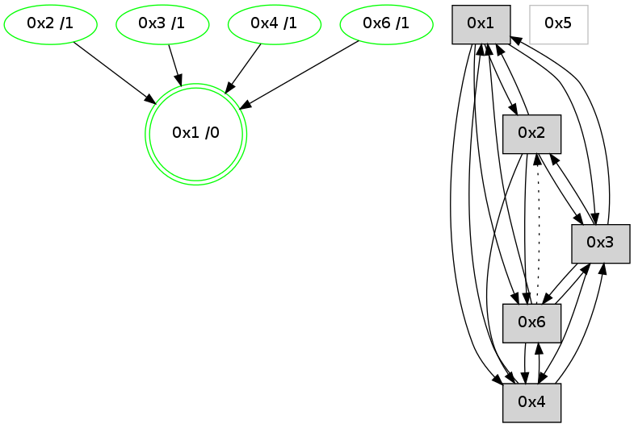

>> << IDX [start] -100 -25 -5 +0 +5 [1240.44456601]
 Previous packets
----------------------------------------------------------------------
1235.422040 beacon01(adaf) #0 coord=01,02,05,03,04,06 cycle=944.0ms assoc
-- color-indic=0 64 40 07
1235.432001 beacon02(adaf) #0 coord=01,02,05,03,04,06 cycle=944.0ms assoc 64 11 f8
1235.442003 beacon05(adaf) #0 coord=01,02,05,03,04,06 cycle=944.0ms assoc 64 b7 d2
1235.452001 beacon03(adaf) #0 coord=01,02,05,03,04,06 cycle=944.0ms assoc 64 2b f6
1235.462002 beacon04(adaf) #0 coord=01,02,05,03,04,06 cycle=944.0ms assoc 64 8d dc
1235.472003 beacon06(adaf) #0 coord=01,02,05,03,04,06 cycle=944.0ms assoc 64 f9 c0
1235.483753 [Hello(4): seq=988 sym=1,3,6 sysInfo=hasWarning stat=1:15,11,4,0/3:15,0,9,1/6:12,0,5,1]
----------------------------------------------------------------------
1236.426545 beacon01(adaf) #0 coord=01,02,05,03,04,06 cycle=944.0ms assoc
-- color-indic=0 64 0c b7
1236.436507 beacon02(adaf) #0 coord=01,02,05,03,04,06 cycle=944.0ms assoc 64 5d 48
1236.446506 beacon05(adaf) #0 coord=01,02,05,03,04,06 cycle=944.0ms assoc 64 fb 62
1236.456507 beacon03(adaf) #0 coord=01,02,05,03,04,06 cycle=944.0ms assoc 64 67 46
1236.466507 beacon04(adaf) #0 coord=01,02,05,03,04,06 cycle=944.0ms assoc 64 c1 6c
1236.476507 beacon06(adaf) #0 coord=01,02,05,03,04,06 cycle=944.0ms assoc 64 b5 70
1236.487634 [Hello(6): seq=905 sym=3,1 asym=2 color=3 sysInfo=hasWarning,MaxColorIndicationCalled,ColoringModeIndicationCalled,MaxColorResponseCalled stat=3:6,0,5,1/1:15,13,13,0/2:3,0,3,1]
1236.493994 [Hello(1): seq=893 sym=2,4,6,3 color=0 sysInfo=hasWarning,MaxColorIndicationCalled,MaxColorResponseCalled,MaxColorRequestCalled,ColoringModeRequestCalled stat=2:0,3,10,0/4:8,0,5,1/6:9,2,14,1/3:5,0,6,1]
----------------------------------------------------------------------
1237.431049 beacon01(adaf) #0 coord=01,02,05,03,04,06 cycle=944.0ms assoc
-- color-indic=0 64 c8 d8
1237.441009 beacon02(adaf) #0 coord=01,02,05,03,04,06 cycle=944.0ms assoc 64 99 27
1237.451010 beacon05(adaf) #0 coord=01,02,05,03,04,06 cycle=944.0ms assoc 64 3f 0d
1237.461010 beacon03(adaf) #0 coord=01,02,05,03,04,06 cycle=944.0ms assoc 64 a3 29
1237.471010 beacon04(adaf) #0 coord=01,02,05,03,04,06 cycle=944.0ms assoc 64 05 03
1237.481012 beacon06(adaf) #0 coord=01,02,05,03,04,06 cycle=944.0ms assoc 64 71 1f
1237.492718 [Hello(4): seq=989 sym=1,3,6 sysInfo=hasWarning stat=1:0,11,4,0/3:0,0,9,1/6:13,0,5,1]
----------------------------------------------------------------------
1238.435553 beacon01(adaf) #0 coord=01,02,05,03,04,06 cycle=944.0ms assoc
-- color-indic=0 64 85 df
1238.445514 beacon02(adaf) #0 coord=01,02,05,03,04,06 cycle=944.0ms assoc 64 d4 20
1238.455515 beacon05(adaf) #0 coord=01,02,05,03,04,06 cycle=944.0ms assoc 64 72 0a
1238.465514 beacon03(adaf) #0 coord=01,02,05,03,04,06 cycle=944.0ms assoc 64 ee 2e
1238.485515 beacon06(adaf) #0 coord=01,02,05,03,04,06 cycle=944.0ms assoc 64 3c 18
1238.497227 [Hello(2): seq=1478 sym=3,6,1,4 color=13 sysInfo=hasWarning,MaxColorIndicationCalled,ColoringModeIndicationCalled,MaxColorResponseCalled stat=3:7,0,4,1/6:4,0,1,1/1:5,7,3,0/4:10,0,6,1]
1238.502200 [Hello(1): seq=894 sym=2,4,6,3 color=0 sysInfo=hasWarning,MaxColorIndicationCalled,MaxColorResponseCalled,MaxColorRequestCalled,ColoringModeRequestCalled stat=2:0,3,10,0/4:8,0,5,1/6:10,2,14,1/3:5,0,6,1]
1238.504393 [STC(1) #0.222 new-neigh,tree-change,inconsistent-stability,stable,to-color d=0]
----------------------------------------------------------------------
1239.440061 beacon01(adaf) #0 coord=01,02,05,03,04,06 cycle=944.0ms assoc
-- color-indic=0 64 41 b0
1239.450021 beacon02(adaf) #0 coord=01,02,05,03,04,06 cycle=944.0ms assoc 64 10 4f
1239.460022 beacon05(adaf) #0 coord=01,02,05,03,04,06 cycle=944.0ms assoc 64 b6 65
1239.470024 beacon03(adaf) #0 coord=01,02,05,03,04,06 cycle=944.0ms assoc 64 2a 41
1239.480034 beacon04(adaf) #0 coord=01,02,05,03,04,06 cycle=944.0ms assoc 64 8c 6b
1239.490023 beacon06(adaf) #0 coord=01,02,05,03,04,06 cycle=944.0ms assoc 64 f8 77
1239.505636 [Hello(6): seq=907 sym=4,3,1 asym=2 color=3 sysInfo=hasWarning,MaxColorIndicationCalled,ColoringModeIndicationCalled,MaxColorResponseCalled stat=4:0,0,0,0/3:8,0,5,1/1:1,13,14,0/2:3,0,3,1]
1239.509500 [STC(6)->1 #0.222 new-neigh,tree-change,inconsistent-stability,stable,to-color d=1]